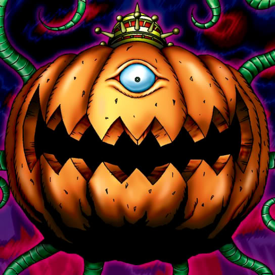

Pumpking the King of Ghosts

Description: "While this card is face-up in the defense position, all ZOMBIE monsters are increased 100 points at the start of each turn."
STATS
ATK: 1800
DEF: 2000DECK COST
Deck Cost per Card: 43EFFECT NOT IMPLEMENTED
Fusion List (6 Possible Fusions)
- Pumpking the King of Ghosts + Lesser Dragon = Curse of Dragon
- Pumpking the King of Ghosts + Meteor Dragon = Curse of Dragon
- Pumpking the King of Ghosts + One-Eyed Shield Dragon = Curse of Dragon
- Pumpking the King of Ghosts + Petit Dragon = Curse of Dragon
- Pumpking the King of Ghosts + Wicked Dragon with the Ersatz Head = Curse of Dragon
- Pumpking the King of Ghosts + Yamatano Dragon Scroll = Curse of Dragon